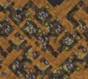

| Village | |
|  |
|
| Abundant | |
| Occasional | |
The Village is a biome found in the Ruins. This is the residential area of the Ancient's civilization, now crumbling and forgotten, except by the Splumonkeys that are frequently found in the area munching on the numerous Cave Bananas from Cave Banana Trees. Much of the area around the crumbling buildings resembles the Wilds, and the occasional Pond, Light Flower, and Lichen can be found.
The crumbling buildings are denoted by blocks of light and dark Runic Turf, and within, both intact and broken Relics can be found.
| Biomes | |
| Surface | Chess • Grasslands • Graveyard • Forest • Marsh • Mosaic • Ocean • Rockyland • Savanna • Desert • Deciduous Forest |
| Caves | Mushtree Forest • Rocky Plains • Stalagmite Biomes • Sunken Forest • Cave Swamps |
| Ruins | Abyss • Labyrinth • Military • Sacred • Village • Wilds |
| Related | Bridges • Map • Road (Trail) • Turfs |